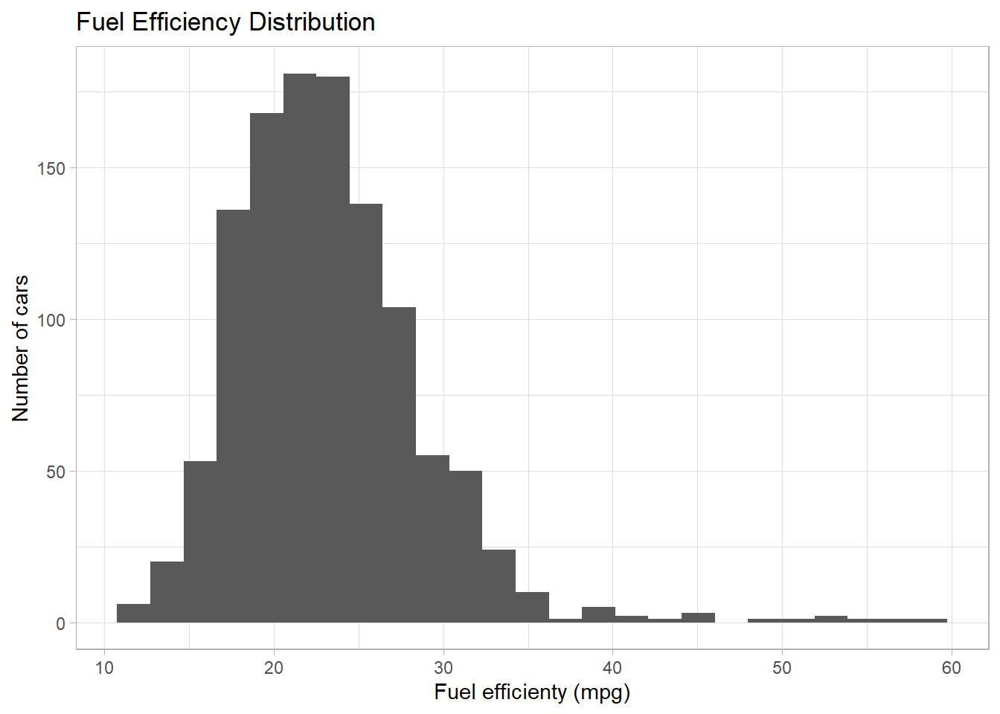

Last updated: 2020-04-04
Checks: 7 0
Knit directory: 00_Supervised_Learning/
This reproducible R Markdown analysis was created with workflowr (version 1.6.1). The Checks tab describes the reproducibility checks that were applied when the results were created. The Past versions tab lists the development history.
Great! Since the R Markdown file has been committed to the Git repository, you know the exact version of the code that produced these results.
Great job! The global environment was empty. Objects defined in the global environment can affect the analysis in your R Markdown file in unknown ways. For reproduciblity it’s best to always run the code in an empty environment.
The command set.seed(20200328) was run prior to running the code in the R Markdown file. Setting a seed ensures that any results that rely on randomness, e.g. subsampling or permutations, are reproducible.
Great job! Recording the operating system, R version, and package versions is critical for reproducibility.
Nice! There were no cached chunks for this analysis, so you can be confident that you successfully produced the results during this run.
Great job! Using relative paths to the files within your workflowr project makes it easier to run your code on other machines.
Great! You are using Git for version control. Tracking code development and connecting the code version to the results is critical for reproducibility.
The results in this page were generated with repository version dfc530b. See the Past versions tab to see a history of the changes made to the R Markdown and HTML files.
Note that you need to be careful to ensure that all relevant files for the analysis have been committed to Git prior to generating the results (you can use wflow_publish or wflow_git_commit). workflowr only checks the R Markdown file, but you know if there are other scripts or data files that it depends on. Below is the status of the Git repository when the results were generated:
Ignored files:
Ignored: .Rhistory
Ignored: .Rproj.user/
Untracked files:
Untracked: data/c1_cars_vars_full.rds
Untracked: data/c1_testing_full.rds
Untracked: data/c1_training_one_percent.rds
Untracked: data/cars2018.csv
Untracked: data/cars_lm_bt.rds
Untracked: data/cars_rf_bt.rds
Untracked: output/car_test.rds
Untracked: output/car_train.rds
Untracked: output/cars_lm_bt.rds
Untracked: output/cars_rf_bt.rds
Untracked: output/cars_vars2.rds
Untracked: output/fit_lm2.rds
Untracked: output/fit_rf.rds
Untracked: output/results_test.rds
Untracked: output/results_train.rds
Note that any generated files, e.g. HTML, png, CSS, etc., are not included in this status report because it is ok for generated content to have uncommitted changes.
These are the previous versions of the repository in which changes were made to the R Markdown (analysis/fuel-efficiency.Rmd) and HTML (docs/fuel-efficiency.html) files. If you’ve configured a remote Git repository (see ?wflow_git_remote), click on the hyperlinks in the table below to view the files as they were in that past version.
| File | Version | Author | Date | Message |
|---|---|---|---|---|
| Rmd | dfc530b | ogorodriguez | 2020-04-04 | Fixed issue with testing model |
| html | 18308e8 | ogorodriguez | 2020-04-04 | Build site. |
| Rmd | 782548b | ogorodriguez | 2020-04-04 | Includes the bootstrap training model and revision of Bootstrapping |
| html | cf83543 | ogorodriguez | 2020-04-04 | Build site. |
| Rmd | c21823f | ogorodriguez | 2020-04-03 | wflow_git_commit(all = TRUE) |
| html | c21823f | ogorodriguez | 2020-04-03 | wflow_git_commit(all = TRUE) |
| Rmd | f453da9 | ogorodriguez | 2020-03-29 | wflow_git_commit(all = TRUE) |
| html | f453da9 | ogorodriguez | 2020-03-29 | wflow_git_commit(all = TRUE) |
| html | 4faa5fb | ogorodriguez | 2020-03-29 | Build site. |
| Rmd | b29089c | ogorodriguez | 2020-03-29 | Evaluation of linear reg and ranforest with yardstick |
| html | 24acf21 | ogorodriguez | 2020-03-29 | Build site. |
| Rmd | 4357344 | ogorodriguez | 2020-03-29 | Evaluation of linear reg and ranforest with yardstick |
| html | 05d430a | ogorodriguez | 2020-03-29 | Build site. |
| Rmd | 8246a7c | ogorodriguez | 2020-03-29 | First publishing of all files |
# Downloading packages needed
library(pacman)
p_load(tidyverse, tidymodels, caret)In this module we will build a model that will help us predict the fuel efficiency of set of cars from the US.
The Data set to use will come from the US Department of Energy
# Show a glimpse of the data
cars2018 <- read_csv("data/cars2018.csv")cars2018 %>%
glimpse()
#> Observations: 1,144
#> Variables: 15
#> $ Model <chr> "Acura NSX", "ALFA ROMEO 4C", "Audi R8 AW...
#> $ `Model Index` <dbl> 57, 410, 65, 71, 66, 72, 46, 488, 38, 278...
#> $ Displacement <dbl> 3.5, 1.8, 5.2, 5.2, 5.2, 5.2, 2.0, 3.0, 8...
#> $ Cylinders <dbl> 6, 4, 10, 10, 10, 10, 4, 6, 16, 8, 8, 8, ...
#> $ Gears <dbl> 9, 6, 7, 7, 7, 7, 6, 7, 7, 8, 8, 7, 7, 7,...
#> $ Transmission <chr> "Manual", "Manual", "Manual", "Manual", "...
#> $ MPG <dbl> 21, 28, 17, 18, 17, 18, 26, 20, 11, 18, 1...
#> $ Aspiration <chr> "Turbocharged/Supercharged", "Turbocharge...
#> $ `Lockup Torque Converter` <chr> "Y", "Y", "Y", "Y", "Y", "Y", "Y", "N", "...
#> $ Drive <chr> "All Wheel Drive", "2-Wheel Drive, Rear",...
#> $ `Max Ethanol` <dbl> 10, 10, 15, 15, 15, 15, 15, 10, 15, 10, 1...
#> $ `Recommended Fuel` <chr> "Premium Unleaded Required", "Premium Unl...
#> $ `Intake Valves Per Cyl` <dbl> 2, 2, 2, 2, 2, 2, 2, 2, 2, 1, 1, 1, 1, 2,...
#> $ `Exhaust Valves Per Cyl` <dbl> 2, 2, 2, 2, 2, 2, 2, 2, 2, 1, 1, 1, 1, 2,...
#> $ `Fuel injection` <chr> "Direct ignition", "Direct ignition", "Di...cars2018 %>%
head()
#> # A tibble: 6 x 15
#> Model `Model Index` Displacement Cylinders Gears Transmission MPG Aspiration
#> <chr> <dbl> <dbl> <dbl> <dbl> <chr> <dbl> <chr>
#> 1 Acur~ 57 3.5 6 9 Manual 21 Turbochar~
#> 2 ALFA~ 410 1.8 4 6 Manual 28 Turbochar~
#> 3 Audi~ 65 5.2 10 7 Manual 17 Naturally~
#> 4 Audi~ 71 5.2 10 7 Manual 18 Naturally~
#> 5 Audi~ 66 5.2 10 7 Manual 17 Naturally~
#> 6 Audi~ 72 5.2 10 7 Manual 18 Naturally~
#> # ... with 7 more variables: `Lockup Torque Converter` <chr>, Drive <chr>, `Max
#> # Ethanol` <dbl>, `Recommended Fuel` <chr>, `Intake Valves Per Cyl` <dbl>,
#> # `Exhaust Valves Per Cyl` <dbl>, `Fuel injection` <chr>Some of the column names have backsticks. This is the way R handles variable names with spaces. Let’s organize that by using the janitor packages that is used to clean the names of columns by normalizing them into lower case and using under scores.
cars2018 <- cars2018 %>%
janitor::clean_names()
cars2018 %>%
glimpse()
#> Observations: 1,144
#> Variables: 15
#> $ model <chr> "Acura NSX", "ALFA ROMEO 4C", "Audi R8 AWD"...
#> $ model_index <dbl> 57, 410, 65, 71, 66, 72, 46, 488, 38, 278, ...
#> $ displacement <dbl> 3.5, 1.8, 5.2, 5.2, 5.2, 5.2, 2.0, 3.0, 8.0...
#> $ cylinders <dbl> 6, 4, 10, 10, 10, 10, 4, 6, 16, 8, 8, 8, 8,...
#> $ gears <dbl> 9, 6, 7, 7, 7, 7, 6, 7, 7, 8, 8, 7, 7, 7, 7...
#> $ transmission <chr> "Manual", "Manual", "Manual", "Manual", "Ma...
#> $ mpg <dbl> 21, 28, 17, 18, 17, 18, 26, 20, 11, 18, 16,...
#> $ aspiration <chr> "Turbocharged/Supercharged", "Turbocharged/...
#> $ lockup_torque_converter <chr> "Y", "Y", "Y", "Y", "Y", "Y", "Y", "N", "Y"...
#> $ drive <chr> "All Wheel Drive", "2-Wheel Drive, Rear", "...
#> $ max_ethanol <dbl> 10, 10, 15, 15, 15, 15, 15, 10, 15, 10, 10,...
#> $ recommended_fuel <chr> "Premium Unleaded Required", "Premium Unlea...
#> $ intake_valves_per_cyl <dbl> 2, 2, 2, 2, 2, 2, 2, 2, 2, 1, 1, 1, 1, 2, 2...
#> $ exhaust_valves_per_cyl <dbl> 2, 2, 2, 2, 2, 2, 2, 2, 2, 1, 1, 1, 1, 2, 2...
#> $ fuel_injection <chr> "Direct ignition", "Direct ignition", "Dire...The model to build will help predict the fuel efficiency of a car based on a number of parameters. The fuel efficiency is given by the varialbe mpg in the previous set cars2018. It refers to the number of miles a car can travel on a sigle gallon of gas.
mpg is a numeric variable. This means that the model we will need will require a regression analysis since we need to predict a number.
Let’s explore more the data that we have in our hands. The variable we need to predict mpg is our set. One good thing to do is to see how distributed is it. We can see this visually using the ggplot graph function.
cars2018 %>%
ggplot(aes(x = mpg)) +
geom_histogram(bins = 25) +
labs(title = "Fuel Efficiency Distribution",
x = "Fuel efficienty (mpg)",
y = "Number of cars") +
theme_light()
It helps to build the simplest model possible before going on to doing sophisticated ones. This will give us an idea of what may be going on with the data.
There is a linear model function in base R that can help us find some underlying relationships.
Two variables are not needed in our set since they are only unique identifiers Model and Model Year so we will remove them from our site.
cars_vars <- cars2018 %>%
select(-starts_with("model"))
cars_vars %>%
glimpse()
#> Observations: 1,144
#> Variables: 13
#> $ displacement <dbl> 3.5, 1.8, 5.2, 5.2, 5.2, 5.2, 2.0, 3.0, 8.0...
#> $ cylinders <dbl> 6, 4, 10, 10, 10, 10, 4, 6, 16, 8, 8, 8, 8,...
#> $ gears <dbl> 9, 6, 7, 7, 7, 7, 6, 7, 7, 8, 8, 7, 7, 7, 7...
#> $ transmission <chr> "Manual", "Manual", "Manual", "Manual", "Ma...
#> $ mpg <dbl> 21, 28, 17, 18, 17, 18, 26, 20, 11, 18, 16,...
#> $ aspiration <chr> "Turbocharged/Supercharged", "Turbocharged/...
#> $ lockup_torque_converter <chr> "Y", "Y", "Y", "Y", "Y", "Y", "Y", "N", "Y"...
#> $ drive <chr> "All Wheel Drive", "2-Wheel Drive, Rear", "...
#> $ max_ethanol <dbl> 10, 10, 15, 15, 15, 15, 15, 10, 15, 10, 10,...
#> $ recommended_fuel <chr> "Premium Unleaded Required", "Premium Unlea...
#> $ intake_valves_per_cyl <dbl> 2, 2, 2, 2, 2, 2, 2, 2, 2, 1, 1, 1, 1, 2, 2...
#> $ exhaust_valves_per_cyl <dbl> 2, 2, 2, 2, 2, 2, 2, 2, 2, 1, 1, 1, 1, 2, 2...
#> $ fuel_injection <chr> "Direct ignition", "Direct ignition", "Dire...Now let us run the linear model and see the relationships therein.
fit_all <- lm(mpg ~ ., data = cars_vars)
summary(fit_all)
#>
#> Call:
#> lm(formula = mpg ~ ., data = cars_vars)
#>
#> Residuals:
#> Min 1Q Median 3Q Max
#> -8.5261 -1.6473 -0.1096 1.3572 26.5045
#>
#> Coefficients:
#> Estimate Std. Error t value
#> (Intercept) 44.539519 1.176283 37.865
#> displacement -3.786147 0.264845 -14.296
#> cylinders 0.520284 0.161802 3.216
#> gears 0.157674 0.069984 2.253
#> transmissionCVT 4.877637 0.404051 12.072
#> transmissionManual -1.074608 0.366075 -2.935
#> aspirationTurbocharged/Supercharged -2.190248 0.267559 -8.186
#> lockup_torque_converterY -2.624494 0.381252 -6.884
#> drive2-Wheel Drive, Rear -2.676716 0.291044 -9.197
#> drive4-Wheel Drive -3.397532 0.335147 -10.137
#> driveAll Wheel Drive -2.941084 0.257174 -11.436
#> max_ethanol -0.007377 0.005898 -1.251
#> recommended_fuelPremium Unleaded Required -0.403935 0.262413 -1.539
#> recommended_fuelRegular Unleaded Recommended -0.996343 0.272495 -3.656
#> intake_valves_per_cyl -1.446107 1.620575 -0.892
#> exhaust_valves_per_cyl -2.469747 1.547748 -1.596
#> fuel_injectionMultipoint/sequential ignition -0.658428 0.243819 -2.700
#> Pr(>|t|)
#> (Intercept) < 2e-16 ***
#> displacement < 2e-16 ***
#> cylinders 0.001339 **
#> gears 0.024450 *
#> transmissionCVT < 2e-16 ***
#> transmissionManual 0.003398 **
#> aspirationTurbocharged/Supercharged 7.24e-16 ***
#> lockup_torque_converterY 9.65e-12 ***
#> drive2-Wheel Drive, Rear < 2e-16 ***
#> drive4-Wheel Drive < 2e-16 ***
#> driveAll Wheel Drive < 2e-16 ***
#> max_ethanol 0.211265
#> recommended_fuelPremium Unleaded Required 0.124010
#> recommended_fuelRegular Unleaded Recommended 0.000268 ***
#> intake_valves_per_cyl 0.372400
#> exhaust_valves_per_cyl 0.110835
#> fuel_injectionMultipoint/sequential ignition 0.007028 **
#> ---
#> Signif. codes: 0 '***' 0.001 '**' 0.01 '*' 0.05 '.' 0.1 ' ' 1
#>
#> Residual standard error: 2.916 on 1127 degrees of freedom
#> Multiple R-squared: 0.7314, Adjusted R-squared: 0.7276
#> F-statistic: 191.8 on 16 and 1127 DF, p-value: < 2.2e-16Let us see the results in a tidier manner using the broom package.
broom::tidy(fit_all)
#> # A tibble: 17 x 5
#> term estimate std.error statistic p.value
#> <chr> <dbl> <dbl> <dbl> <dbl>
#> 1 (Intercept) 44.5 1.18 37.9 4.44e-203
#> 2 displacement -3.79 0.265 -14.3 9.95e- 43
#> 3 cylinders 0.520 0.162 3.22 1.34e- 3
#> 4 gears 0.158 0.0700 2.25 2.44e- 2
#> 5 transmissionCVT 4.88 0.404 12.1 1.21e- 31
#> 6 transmissionManual -1.07 0.366 -2.94 3.40e- 3
#> 7 aspirationTurbocharged/Supercharged -2.19 0.268 -8.19 7.24e- 16
#> 8 lockup_torque_converterY -2.62 0.381 -6.88 9.65e- 12
#> 9 drive2-Wheel Drive, Rear -2.68 0.291 -9.20 1.73e- 19
#> 10 drive4-Wheel Drive -3.40 0.335 -10.1 3.59e- 23
#> 11 driveAll Wheel Drive -2.94 0.257 -11.4 9.89e- 29
#> 12 max_ethanol -0.00738 0.00590 -1.25 2.11e- 1
#> 13 recommended_fuelPremium Unleaded Requ~ -0.404 0.262 -1.54 1.24e- 1
#> 14 recommended_fuelRegular Unleaded Reco~ -0.996 0.272 -3.66 2.68e- 4
#> 15 intake_valves_per_cyl -1.45 1.62 -0.892 3.72e- 1
#> 16 exhaust_valves_per_cyl -2.47 1.55 -1.60 1.11e- 1
#> 17 fuel_injectionMultipoint/sequential i~ -0.658 0.244 -2.70 7.03e- 3# Let's see the measures in detail
# Use tidyr::pivot_longer() to get the results in column form.
broom::glance(fit_all) %>%
tidyr::pivot_longer(everything(), names_to = "measures", values_to = "values")
#> # A tibble: 11 x 2
#> measures values
#> <chr> <dbl>
#> 1 r.squared 7.31e- 1
#> 2 adj.r.squared 7.28e- 1
#> 3 sigma 2.92e+ 0
#> 4 statistic 1.92e+ 2
#> 5 p.value 8.58e-308
#> 6 df 1.70e+ 1
#> 7 logLik -2.84e+ 3
#> 8 AIC 5.71e+ 3
#> 9 BIC 5.80e+ 3
#> 10 deviance 9.58e+ 3
#> 11 df.residual 1.13e+ 3Interpreting the results from this model quickly, we can see this model may do a good job predicting the fuel efficiency from the variables indicated in this dataset. Some key points for this argument are:
We have not yet tested the model and its quality in a real set of values. That is why in the next section we will use training and testing subsets of the data to train our model
caret is a package used for working with machine learning trainig models. We will be using it together with other packages included in the tidymodels suite.
It is advisable to hold some of our data for testing purposes and use the rest to train our model. Then we can compare how the model performs on fresh data. This will give us more insights into the use of the model to propose. Linear model it is said may not be the most accurate nor sophisticated but in this case it will help internalize the concepts.
The package rsample contains a function that will help us split the data into a proportion for training and another for testing.
car_split <- cars2018 %>%
rsample::initial_split(prop = 0.8,
strata = "aspiration")The split within the set will be done at 80%, which means that the training set will be comprised of 80% of the data and the testing set of 20%. The split was done so that the data will be balanced according to the aspiration variable. Meaning, so that the both splits have a balanced inclusion of both types in them.
If we look at the object car_split we can see it is a special class. and also its output is just sequence of numbers.
car_split %>%
class()
#> [1] "rsplit" "mc_split"car_split
#> <916/228/1144>This sequence of numbers indicate the amount of points used for training (916), followed by the amount used for testing (228) and then the total number of observations in our dataset (1144).
We can see this in a tidy way buy pulling out the tidy() function from broom and then using count from dplyr. The systmes labels Analysis the observation used for training and Assessment those used for testing.
broom::tidy(car_split) %>%
dplyr::count(Data, sort = TRUE)
#> # A tibble: 2 x 2
#> Data n
#> <chr> <int>
#> 1 Analysis 916
#> 2 Assessment 228Let’s access both these sets using variables for training and testing.
car_training <- rsample::training(car_split)
car_testing <- rsample::testing(car_split)The basic workflow here is: - Build the model with the testing data - Validate the model with validation data - Evaluate the model with testing data
In the previous section the notion of validation was introduced. Validation is needed when we are trying to assess several models and then choose the best one, or the most significant one, to evaluate. For this section it is not be necessary.
caret has an engine that lets us plug in the model we would like to use our training data on. It contains various models, including the linear model one, or lm.
fit_lm <- caret::train(log(mpg) ~ .,
method = "lm",
data = car_training,
trContro = trainControl(method = "none") )Let’s check the class of the fit_lm model.
fit_lm %>%
class()
#> [1] "train" "train.formula"Let’s inspect the model.
fit_lm
#> Linear Regression
#>
#> 916 samples
#> 14 predictor
#>
#> No pre-processing
#> Resampling: Bootstrapped (25 reps)
#> Summary of sample sizes: 916, 916, 916, 916, 916, 916, ...
#> Resampling results:
#>
#> RMSE Rsquared MAE
#> 0.1606464 0.6040351 0.113699
#>
#> Tuning parameter 'intercept' was held constant at a value of TRUEAt first we can see that from the 916 observations of our training sample it identified 14 predictors. In comparison the lm() from base R identified 13. In this case the r_squared is less then in base R (0.6 compared to 0.7 in base R.)
The evaluation can be done also using the yardstick package.
I will practice again with a new dataset imported for this course.
cars_vars2 <- readr::read_rds("data/c1_cars_vars_full.rds") %>% janitor::clean_names()
cars_vars2 %>% glimpse()
#> Observations: 1,144
#> Variables: 13
#> $ displacement <dbl> 3.5, 1.8, 5.2, 5.2, 5.2, 5.2, 2.0, 3.0, 8.0...
#> $ cylinders <int> 6, 4, 10, 10, 10, 10, 4, 6, 16, 8, 8, 8, 8,...
#> $ gears <int> 9, 6, 7, 7, 7, 7, 6, 7, 7, 8, 8, 7, 7, 7, 7...
#> $ transmission <chr> "Manual", "Manual", "Manual", "Manual", "Ma...
#> $ mpg <int> 21, 28, 17, 18, 17, 18, 26, 20, 11, 18, 16,...
#> $ aspiration <chr> "Turbocharged/Supercharged", "Turbocharged/...
#> $ lockup_torque_converter <chr> "Y", "Y", "Y", "Y", "Y", "Y", "Y", "N", "Y"...
#> $ drive <chr> "All Wheel Drive", "2-Wheel Drive, Rear", "...
#> $ max_ethanol <int> 10, 10, 15, 15, 15, 15, 15, 10, 15, 10, 10,...
#> $ recommended_fuel <chr> "Premium Unleaded Required", "Premium Unlea...
#> $ intake_valves_per_cyl <int> 2, 2, 2, 2, 2, 2, 2, 2, 2, 1, 1, 1, 1, 2, 2...
#> $ exhaust_valves_per_cyl <int> 2, 2, 2, 2, 2, 2, 2, 2, 2, 1, 1, 1, 1, 2, 2...
#> $ fuel_injection <chr> "Direct ignition", "Direct ignition", "Dire...car_split2 <- cars_vars2 %>%
rsample::initial_split(prop = 0.8,
strata = "aspiration")
car_train <- rsample::training(car_split2)
car_test <- rsample::testing(car_split2)Let us fit the model
fit_lm2 <- caret::train(log(mpg) ~ .,
method = "lm",
data = car_train,
trControl = trainControl(method = "none"))fit_lm2
#> Linear Regression
#>
#> 916 samples
#> 12 predictor
#>
#> No pre-processing
#> Resampling: NoneNow let’s train a RandomForest model
fit_rf <- caret::train(log(mpg) ~ .,
method = "rf",
data = car_train,
trControl = trainControl(method = "none"))fit_rf %>% class()
#> [1] "train" "train.formula"fit_rf
#> Random Forest
#>
#> 916 samples
#> 12 predictor
#>
#> No pre-processing
#> Resampling: NoneFor the evaluation we will need to create a dataframe with both our train datasets that includes both our models and after that, run the metrics() function from the yardsticks package.
library(yardstick)
# The dataframe will be called results that will include the training set used to create the lm and the rf models
results_train <- car_train %>%
mutate(mpg_log = log(mpg),
lreg = predict(fit_lm2, car_train),
rfor = predict(fit_rf, car_train)) %>%
select(mpg, mpg_log, lreg, rfor, everything())
Let’s see this new dataset
results_train %>%
glimpse()
#> Observations: 916
#> Variables: 16
#> $ mpg <int> 21, 28, 17, 18, 17, 18, 26, 20, 11, 18, 16,...
#> $ mpg_log <dbl> 3.044522, 3.332205, 2.833213, 2.890372, 2.8...
#> $ lreg <dbl> 2.959295, 3.189499, 2.818505, 2.832572, 2.8...
#> $ rfor <dbl> 3.054315, 3.269829, 2.797044, 2.828388, 2.7...
#> $ displacement <dbl> 3.5, 1.8, 5.2, 5.2, 5.2, 5.2, 2.0, 3.0, 8.0...
#> $ cylinders <int> 6, 4, 10, 10, 10, 10, 4, 6, 16, 8, 8, 8, 8,...
#> $ gears <int> 9, 6, 7, 7, 7, 7, 6, 7, 7, 8, 8, 7, 7, 7, 7...
#> $ transmission <chr> "Manual", "Manual", "Manual", "Manual", "Ma...
#> $ aspiration <chr> "Turbocharged/Supercharged", "Turbocharged/...
#> $ lockup_torque_converter <chr> "Y", "Y", "Y", "Y", "Y", "Y", "Y", "N", "Y"...
#> $ drive <chr> "All Wheel Drive", "2-Wheel Drive, Rear", "...
#> $ max_ethanol <int> 10, 10, 15, 15, 15, 15, 15, 10, 15, 10, 10,...
#> $ recommended_fuel <chr> "Premium Unleaded Required", "Premium Unlea...
#> $ intake_valves_per_cyl <int> 2, 2, 2, 2, 2, 2, 2, 2, 2, 1, 1, 1, 1, 2, 2...
#> $ exhaust_valves_per_cyl <int> 2, 2, 2, 2, 2, 2, 2, 2, 2, 1, 1, 1, 1, 2, 2...
#> $ fuel_injection <chr> "Direct ignition", "Direct ignition", "Dire...Now let’s evaluate the performance.
yardstick::metrics(results_train, truth = mpg_log, estimate = lreg)
#> # A tibble: 3 x 3
#> .metric .estimator .estimate
#> <chr> <chr> <dbl>
#> 1 rmse standard 0.0989
#> 2 rsq standard 0.812
#> 3 mae standard 0.0735yardstick::metrics(results_train, truth = mpg_log, estimate = rfor)
#> # A tibble: 3 x 3
#> .metric .estimator .estimate
#> <chr> <chr> <dbl>
#> 1 rmse standard 0.0665
#> 2 rsq standard 0.918
#> 3 mae standard 0.0477Let’s see hot these models do on the testing data.
results_test <- car_test %>%
mutate(mpg_log = log(mpg),
lreg = predict(fit_lm2, car_test),
rfor = predict(fit_rf, car_test)) %>%
select(mpg, mpg_log, lreg, rfor, everything())
yardstick::metrics(results_test, truth = mpg_log, estimate = lreg)
#> # A tibble: 3 x 3
#> .metric .estimator .estimate
#> <chr> <chr> <dbl>
#> 1 rmse standard 0.104
#> 2 rsq standard 0.783
#> 3 mae standard 0.0769yardstick::metrics(results_test, truth = mpg_log, estimate = rfor)
#> # A tibble: 3 x 3
#> .metric .estimator .estimate
#> <chr> <chr> <dbl>
#> 1 rmse standard 0.0798
#> 2 rsq standard 0.870
#> 3 mae standard 0.0586Now we are going to use methods to refine the model that a simple linear regression may not be so in tune for.
One of those is bootstrapping. Bootstrapping is simply getting a sample with replacement. The methods here in R may take longer since we can have as many samples as necessary. The system will run the model that number of times and will deliver an average result.
Due to the heavy load of the work, there is a reduced dataset already available in the course for us to work with with 1% of the data.
car_train_1p <- readr::read_rds("data/c1_training_one_percent.rds") %>% janitor::clean_names()car_train_1p %>%
glimpse()
#> Observations: 93
#> Variables: 13
#> $ displacement <dbl> 2.0, 2.5, 2.0, 2.4, 2.7, 3.0, 6.4, 3.3, 2.0...
#> $ cylinders <int> 4, 4, 4, 4, 4, 6, 8, 6, 4, 6, 8, 6, 4, 4, 4...
#> $ gears <int> 7, 6, 8, 6, 6, 8, 8, 6, 6, 10, 7, 6, 6, 6, ...
#> $ transmission <chr> "Manual", "Manual", "Automatic", "Automatic...
#> $ mpg <int> 27, 22, 29, 23, 20, 23, 18, 20, 29, 19, 18,...
#> $ aspiration <chr> "Turbocharged/Supercharged", "Naturally Asp...
#> $ lockup_torque_converter <chr> "Y", "N", "Y", "Y", "Y", "Y", "Y", "Y", "Y"...
#> $ drive <chr> "All Wheel Drive", "2-Wheel Drive, Rear", "...
#> $ max_ethanol <int> 15, 10, 10, 15, 15, 10, 10, 85, 10, 15, 10,...
#> $ recommended_fuel <chr> "Premium Unleaded Recommended", "Regular Un...
#> $ intake_valves_per_cyl <int> 2, 2, 2, 2, 2, 2, 1, 2, 2, 2, 2, 2, 2, 2, 2...
#> $ exhaust_valves_per_cyl <int> 2, 2, 2, 2, 2, 2, 1, 2, 2, 2, 2, 2, 2, 2, 2...
#> $ fuel_injection <chr> "Direct ignition", "Direct ignition", "Dire...Let’s run the models
cars_1p_lm_bt <- train(log(mpg) ~ .,
method = "lm",
data = car_train_1p,
trControl = trainControl(method = "boot"))cars_1p_lm_bt
#> Linear Regression
#>
#> 93 samples
#> 12 predictors
#>
#> No pre-processing
#> Resampling: Bootstrapped (25 reps)
#> Summary of sample sizes: 93, 93, 93, 93, 93, 93, ...
#> Resampling results:
#>
#> RMSE Rsquared MAE
#> 0.09194264 0.8308545 0.0718651
#>
#> Tuning parameter 'intercept' was held constant at a value of TRUEcars_1p_rf_bt <- train(log(mpg) ~ .,
method = "rf",
data = car_train_1p,
trControl = trainControl(method = "boot"))cars_1p_rf_bt
#> Random Forest
#>
#> 93 samples
#> 12 predictors
#>
#> No pre-processing
#> Resampling: Bootstrapped (25 reps)
#> Summary of sample sizes: 93, 93, 93, 93, 93, 93, ...
#> Resampling results across tuning parameters:
#>
#> mtry RMSE Rsquared MAE
#> 2 0.11276294 0.8143914 0.08652538
#> 9 0.09281693 0.8322639 0.07181900
#> 16 0.09575833 0.8150113 0.07260717
#>
#> RMSE was used to select the optimal model using the smallest value.
#> The final value used for the model was mtry = 9.Let’s compare the training models with bootstrapping in the dataset
results_train_1p_bt <- car_train_1p %>%
mutate(mpg_log = log(mpg),
lreg = predict(cars_1p_lm_bt, car_train_1p),
rfor = predict(cars_1p_rf_bt, car_train_1p)) %>%
select(mpg, mpg_log, lreg, rfor, everything())results_train_1p_bt
#> # A tibble: 93 x 16
#> mpg mpg_log lreg rfor displacement cylinders gears transmission
#> <int> <dbl> <dbl> <dbl> <dbl> <int> <int> <chr>
#> 1 27 3.30 3.19 3.23 2 4 7 Manual
#> 2 22 3.09 3.19 3.17 2.5 4 6 Manual
#> 3 29 3.37 3.34 3.34 2 4 8 Automatic
#> 4 23 3.14 3.13 3.13 2.4 4 6 Automatic
#> 5 20 3.00 3.13 3.12 2.7 4 6 Automatic
#> 6 23 3.14 3.14 3.16 3 6 8 Automatic
#> 7 18 2.89 2.88 2.89 6.4 8 8 Automatic
#> 8 20 3.00 3.00 2.98 3.3 6 6 Automatic
#> 9 29 3.37 3.22 3.36 2 4 6 Automatic
#> 10 19 2.94 2.99 2.95 3.5 6 10 Automatic
#> # ... with 83 more rows, and 8 more variables: aspiration <chr>,
#> # lockup_torque_converter <chr>, drive <chr>, max_ethanol <int>,
#> # recommended_fuel <chr>, intake_valves_per_cyl <int>,
#> # exhaust_valves_per_cyl <int>, fuel_injection <chr>Let’s check how efficient are the models
yardstick::metrics(results_train_1p_bt, truth = mpg_log, estimate = lreg)
#> # A tibble: 3 x 3
#> .metric .estimator .estimate
#> <chr> <chr> <dbl>
#> 1 rmse standard 0.0657
#> 2 rsq standard 0.910
#> 3 mae standard 0.0518yardstick::metrics(results_train_1p_bt, truth = mpg_log, estimate = rfor)
#> # A tibble: 3 x 3
#> .metric .estimator .estimate
#> <chr> <chr> <dbl>
#> 1 rmse standard 0.0432
#> 2 rsq standard 0.965
#> 3 mae standard 0.0343For the testing model we will use a testing data set already prepared for by the course and loaded into the data folder. The models also were pre-built with the full data set as well. Thsi is just for the sake of convenience since the models may take a long time to run due to the bootstrapping.
I will load them now into the environment now.
The dataset
cars_test_bt <- readr::read_rds("data/c1_testing_full.rds") cars_test_bt %>%
glimpse()
#> Observations: 228
#> Variables: 13
#> $ Displacement <dbl> 6.2, 3.9, 2.0, 3.0, 2.0, 3.0, 6.5, 5.2, 2...
#> $ Cylinders <int> 8, 8, 4, 6, 4, 6, 12, 10, 4, 8, 8, 8, 12,...
#> $ Gears <int> 7, 7, 8, 8, 8, 6, 7, 7, 6, 7, 7, 7, 7, 6,...
#> $ Transmission <chr> "Manual", "Manual", "Automatic", "Automat...
#> $ MPG <int> 18, 18, 26, 23, 26, 18, 12, 15, 29, 17, 1...
#> $ Aspiration <chr> "Turbocharged/Supercharged", "Turbocharge...
#> $ `Lockup Torque Converter` <chr> "N", "N", "Y", "Y", "Y", "N", "Y", "Y", "...
#> $ Drive <chr> "2-Wheel Drive, Rear", "2-Wheel Drive, Re...
#> $ `Max Ethanol` <int> 10, 10, 15, 15, 15, 15, 15, 15, 10, 10, 1...
#> $ `Recommended Fuel` <chr> "Premium Unleaded Required", "Premium Unl...
#> $ `Intake Valves Per Cyl` <int> 1, 2, 2, 2, 2, 2, 2, 2, 2, 2, 2, 2, 2, 2,...
#> $ `Exhaust Valves Per Cyl` <int> 1, 2, 2, 2, 2, 2, 2, 2, 2, 2, 2, 2, 1, 2,...
#> $ `Fuel injection` <chr> "Direct ignition", "Direct ignition", "Di...Now I wil load the pre-made models
cars_lm_bt <- readr::read_rds("data/cars_lm_bt.rds")
cars_rf_bt <- readr::read_rds("data/cars_rf_bt.rds")Now let’s build the results table
results_test_bt <- cars_test_bt %>%
mutate(log_mpg = log(MPG),
lm_mpg = predict(cars_lm_bt, cars_test_bt),
rf_mpg = predict(cars_rf_bt, cars_test_bt)) %>%
select(MPG, log_mpg, lm_mpg, rf_mpg, everything())results_test_bt %>%
glimpse()
#> Observations: 228
#> Variables: 16
#> $ MPG <int> 18, 18, 26, 23, 26, 18, 12, 15, 29, 17, 1...
#> $ log_mpg <dbl> 2.890372, 2.890372, 3.258097, 3.135494, 3...
#> $ lm_mpg <dbl> 2.790370, 2.999073, 3.223341, 3.087742, 3...
#> $ rf_mpg <dbl> 2.807829, 2.880009, 3.269779, 3.111423, 3...
#> $ Displacement <dbl> 6.2, 3.9, 2.0, 3.0, 2.0, 3.0, 6.5, 5.2, 2...
#> $ Cylinders <int> 8, 8, 4, 6, 4, 6, 12, 10, 4, 8, 8, 8, 12,...
#> $ Gears <int> 7, 7, 8, 8, 8, 6, 7, 7, 6, 7, 7, 7, 7, 6,...
#> $ Transmission <chr> "Manual", "Manual", "Automatic", "Automat...
#> $ Aspiration <chr> "Turbocharged/Supercharged", "Turbocharge...
#> $ `Lockup Torque Converter` <chr> "N", "N", "Y", "Y", "Y", "N", "Y", "Y", "...
#> $ Drive <chr> "2-Wheel Drive, Rear", "2-Wheel Drive, Re...
#> $ `Max Ethanol` <int> 10, 10, 15, 15, 15, 15, 15, 15, 10, 10, 1...
#> $ `Recommended Fuel` <chr> "Premium Unleaded Required", "Premium Unl...
#> $ `Intake Valves Per Cyl` <int> 1, 2, 2, 2, 2, 2, 2, 2, 2, 2, 2, 2, 2, 2,...
#> $ `Exhaust Valves Per Cyl` <int> 1, 2, 2, 2, 2, 2, 2, 2, 2, 2, 2, 2, 1, 2,...
#> $ `Fuel injection` <chr> "Direct ignition", "Direct ignition", "Di...Now we can compare the models
yardstick::metrics(results_test_bt, truth = "log_mpg", estimate = "lm_mpg")
#> # A tibble: 3 x 3
#> .metric .estimator .estimate
#> <chr> <chr> <dbl>
#> 1 rmse standard 0.0934
#> 2 rsq standard 0.844
#> 3 mae standard 0.0728yardstick::metrics(results_test_bt, truth = "log_mpg", estimate = "rf_mpg")
#> # A tibble: 3 x 3
#> .metric .estimator .estimate
#> <chr> <chr> <dbl>
#> 1 rmse standard 0.0690
#> 2 rsq standard 0.916
#> 3 mae standard 0.0503I want to build a tbl for me to compare each metric one by one.
I will add column to each metric indicating the name of the model
lm_metric <- results_test_bt %>%
metrics(truth = "log_mpg", estimate = "lm_mpg") %>%
mutate(model = "linear model") %>%
select(-.estimator)lm_metric
#> # A tibble: 3 x 3
#> .metric .estimate model
#> <chr> <dbl> <chr>
#> 1 rmse 0.0934 linear model
#> 2 rsq 0.844 linear model
#> 3 mae 0.0728 linear modelrf_metric <- results_test_bt %>%
metrics(truth = "log_mpg", estimate = "rf_mpg") %>%
mutate(model = "Random Forest") %>%
select(-.estimator)rf_metric
#> # A tibble: 3 x 3
#> .metric .estimate model
#> <chr> <dbl> <chr>
#> 1 rmse 0.0690 Random Forest
#> 2 rsq 0.916 Random Forest
#> 3 mae 0.0503 Random ForestNow let’s combine them in one tbl
bt_metrics <- bind_rows(lm_metric, rf_metric) %>%
pivot_wider(names_from = .metric,
values_from = .estimate)bt_metrics
#> # A tibble: 2 x 4
#> model rmse rsq mae
#> <chr> <dbl> <dbl> <dbl>
#> 1 linear model 0.0934 0.844 0.0728
#> 2 Random Forest 0.0690 0.916 0.0503
sessionInfo()
#> R version 3.6.1 (2019-07-05)
#> Platform: x86_64-w64-mingw32/x64 (64-bit)
#> Running under: Windows 10 x64 (build 18362)
#>
#> Matrix products: default
#>
#> locale:
#> [1] LC_COLLATE=Spanish_Spain.1252 LC_CTYPE=Spanish_Spain.1252
#> [3] LC_MONETARY=Spanish_Spain.1252 LC_NUMERIC=C
#> [5] LC_TIME=Spanish_Spain.1252
#>
#> attached base packages:
#> [1] stats graphics grDevices utils datasets methods base
#>
#> other attached packages:
#> [1] caret_6.0-86 lattice_0.20-40 pacman_0.5.1 yardstick_0.0.5
#> [5] workflows_0.1.0 tune_0.0.1 rsample_0.0.5 recipes_0.1.10
#> [9] parsnip_0.0.5 infer_0.5.1 dials_0.0.4 scales_1.1.0
#> [13] broom_0.5.4 tidymodels_0.1.0 forcats_0.4.0 stringr_1.4.0
#> [17] dplyr_0.8.4 purrr_0.3.3 readr_1.3.1 tidyr_1.0.2
#> [21] tibble_2.1.3 tidyverse_1.3.0 ggplot2_3.2.1 workflowr_1.6.1
#>
#> loaded via a namespace (and not attached):
#> [1] readxl_1.3.1 backports_1.1.5 tidytext_0.2.2
#> [4] plyr_1.8.5 igraph_1.2.4.2 lazyeval_0.2.2
#> [7] splines_3.6.1 crosstalk_1.0.0 listenv_0.8.0
#> [10] SnowballC_0.6.0 rstantools_2.0.0 inline_0.3.15
#> [13] digest_0.6.24 foreach_1.4.8 htmltools_0.4.0
#> [16] rsconnect_0.8.16 fansi_0.4.0 magrittr_1.5
#> [19] globals_0.12.5 modelr_0.1.5 gower_0.2.1
#> [22] matrixStats_0.55.0 xts_0.12-0 prettyunits_1.1.1
#> [25] colorspace_1.4-1 rvest_0.3.5 haven_2.2.0
#> [28] xfun_0.12 callr_3.4.2 crayon_1.3.4
#> [31] jsonlite_1.6.1 lme4_1.1-21 survival_3.1-8
#> [34] zoo_1.8-7 iterators_1.0.12 glue_1.3.1
#> [37] gtable_0.3.0 ipred_0.9-9 pkgbuild_1.0.6
#> [40] rstan_2.19.3 DBI_1.1.0 miniUI_0.1.1.1
#> [43] Rcpp_1.0.4 xtable_1.8-4 GPfit_1.0-8
#> [46] StanHeaders_2.21.0-1 stats4_3.6.1 lava_1.6.6
#> [49] prodlim_2019.11.13 DT_0.12 htmlwidgets_1.5.1
#> [52] httr_1.4.1 threejs_0.3.3 farver_2.0.3
#> [55] loo_2.2.0 pkgconfig_2.0.3 nnet_7.3-12
#> [58] dbplyr_1.4.2 janitor_1.2.1 utf8_1.1.4
#> [61] labeling_0.3 tidyselect_1.0.0 rlang_0.4.4
#> [64] DiceDesign_1.8-1 reshape2_1.4.3 later_1.0.0
#> [67] munsell_0.5.0 cellranger_1.1.0 tools_3.6.1
#> [70] cli_2.0.1 generics_0.0.2 ggridges_0.5.2
#> [73] evaluate_0.14 fastmap_1.0.1 yaml_2.2.1
#> [76] ModelMetrics_1.2.2.2 processx_3.4.2 knitr_1.28
#> [79] fs_1.3.2 randomForest_4.6-14 future_1.16.0
#> [82] nlme_3.1-144 whisker_0.4 mime_0.9
#> [85] rstanarm_2.19.3 xml2_1.2.2 tokenizers_0.2.1
#> [88] compiler_3.6.1 bayesplot_1.7.1 shinythemes_1.1.2
#> [91] rstudioapi_0.11 reprex_0.3.0 tidyposterior_0.0.2
#> [94] lhs_1.0.1 stringi_1.4.6 ps_1.3.2
#> [97] Matrix_1.2-18 nloptr_1.2.1 markdown_1.1
#> [100] shinyjs_1.1 vctrs_0.2.3 pillar_1.4.3
#> [103] lifecycle_0.1.0 furrr_0.1.0 data.table_1.12.8
#> [106] httpuv_1.5.2 R6_2.4.1 promises_1.1.0
#> [109] gridExtra_2.3 janeaustenr_0.1.5 codetools_0.2-16
#> [112] boot_1.3-24 colourpicker_1.0 MASS_7.3-51.5
#> [115] gtools_3.8.1 assertthat_0.2.1 rprojroot_1.3-2
#> [118] withr_2.1.2 shinystan_2.5.0 parallel_3.6.1
#> [121] hms_0.5.3 grid_3.6.1 rpart_4.1-15
#> [124] timeDate_3043.102 minqa_1.2.4 class_7.3-15
#> [127] snakecase_0.11.0 rmarkdown_2.1 git2r_0.26.1
#> [130] pROC_1.16.1 tidypredict_0.4.5 shiny_1.4.0
#> [133] lubridate_1.7.4 base64enc_0.1-3 dygraphs_1.1.1.6